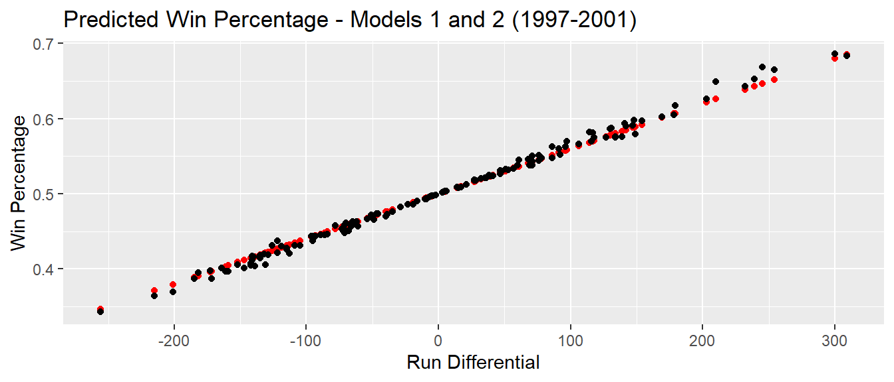
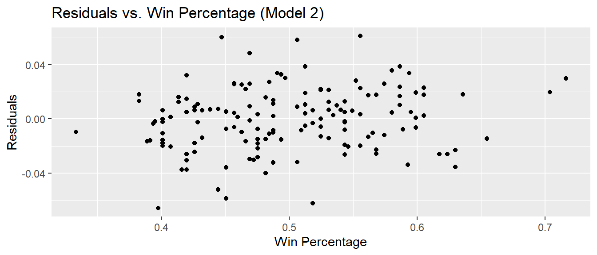
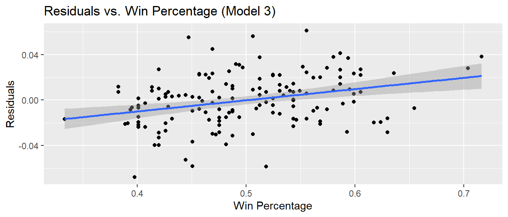

library(tidyverse)
library(Lahman)
library(knitr)
library(ggrepel)
library(broom)MA388 Sabermetrics: Lesson 8
How many runs is a win? - Part II
Review
In our last lesson, we discussed the following model:
\(Wins_i = \beta_0 + \beta_1 RD_i + \epsilon_i \quad \epsilon_i \sim \text{Normal}\left(0,\sigma^2\right)\)
where \(Wins_i\) and \(RD_i\) are the wins and run differential for team \(i\).
Interpret the coefficients in this model.
Pythagorean Models
Discuss limitations for the regression model above.
Here are three models:
\[\begin{align} Wpct &= \beta_0 + \beta_1 RD + \epsilon \\ Wpct &= \frac{R^2}{R^2 + RA^2} + \epsilon \\ Wpct &= \frac{R^k}{R^k + RA^k} + \epsilon \end{align}\]
where \(Wpct\) is Win Percentage, \(R\) is Runs Scored, \(RA\) is Runs Allowed, and \(\epsilon\) is the random error. Recall that we fit Model 1 to the 1997-2001 seasons.
Briefly discuss the strengths/limitations of each model.
How would you assess which model is the best? Please be specific.
Model 2: Pythagorean Formula (Bill James)
First, let’s create a function to calculate the expected wins under a Pythagorean Formula.
# Function to calculate expected wins using Pythagorean formula.
# Arguments:
# R - runs scored
# RA - runs allowed
# k - exponent
# Value Returned:
# expected win percentage
pyth_wins <- function(R, RA, k = 2){
return(R^k/(R^k + RA^k))
}Using Model 2, let’s calculate the expected number of wins for each team (1997-2001).
my_teams = Teams |>
filter(yearID >= 1997, yearID <= 2001) |>
mutate(RD = R - RA,
Wpct = W/(W+L),
Wpct_pyth2 = pyth_wins(R,RA,2))Next, let’s compare graphically the predictions from Model 1 and 2.
# Get predicted win percentages from Model 1.
lin_fit <- lm(Wpct ~ RD, data = my_teams)
my_teams <- augment(lin_fit, data = my_teams)
# Plot Model 1 and Model 2 predictions.
my_teams |>
ggplot(aes(x = RD, y = .fitted)) +
geom_point(col = "red") +
# geom_point(aes(x = RD, y = Wpct)) +
geom_point(aes(x = RD, y = Wpct_pyth2)) +
labs(x = "Run Differential",
y = "Win Percentage",
title = "Predicted Win Percentage - Models 1 and 2 (1997-2001)")
summary(lin_fit)
Call:
lm(formula = Wpct ~ RD, data = my_teams)
Residuals:
Min 1Q Median 3Q Max
-0.063492 -0.014889 0.001682 0.014852 0.060984
Coefficients:
Estimate Std. Error t value Pr(>|t|)
(Intercept) 5.000e-01 1.888e-03 264.85 <2e-16 ***
RD 5.994e-04 1.662e-05 36.06 <2e-16 ***
---
Signif. codes: 0 '***' 0.001 '**' 0.01 '*' 0.05 '.' 0.1 ' ' 1
Residual standard error: 0.02297 on 146 degrees of freedom
Multiple R-squared: 0.8991, Adjusted R-squared: 0.8984
F-statistic: 1301 on 1 and 146 DF, p-value: < 2.2e-16Briefly discuss how the models differ.
Next, let’s compare the root mean square error (RMSE). Write an equation for the RMSE.
# Model 1 RMSE
sqrt(mean(my_teams$.resid^2))[1] 0.0228099# Note this is very close to the Residual Standard Error you could obtain from the model.
summary(lin_fit)$sigma[1] 0.02296561# Model 2 RMSE
# Calculate residuals.
my_teams = my_teams |>
mutate(.resid_pyth2 = Wpct - Wpct_pyth2)
# Calculate RMSE for Model 2
sqrt(mean(my_teams$.resid_pyth2^2))[1] 0.023058Next, let’s take a look at the residuals from Model 2.
# Let's look at a summary of the residuals (min, max, mean, and quartiles).
my_teams |>
pull(.resid_pyth2) |>
summary() Min. 1st Qu. Median Mean 3rd Qu. Max.
-0.0659548 -0.0153919 0.0014263 -0.0001182 0.0158258 0.0612624 my_teams |>
ggplot(aes(x = Wpct,
y = .resid_pyth2)) +
geom_point() +
labs(x = "Win Percentage", y = "Residuals",
title = "Residuals vs. Win Percentage (Model 2)")
Next, let’s try Model 3.
How do we find an estimate of \(k\) in Model 3?
my_teams = my_teams |>
mutate(logWratio = log(W/L),
logRratio = log(R/RA))
# Including 0 in formula means we don't include an intercept.
pythFit <- lm(logWratio ~ 0 + logRratio, data = my_teams)
pythFit
Call:
lm(formula = logWratio ~ 0 + logRratio, data = my_teams)
Coefficients:
logRratio
1.904 Why don’t we want an intercept in this model? (Warning: this is very unusual!)
k = pythFit$coefficients[1]
# Get predictions.
my_teams = my_teams |>
mutate(Wpct_pyth_k = pyth_wins(R,RA,k = k))
# Get residuals.
my_teams = my_teams |>
mutate(.resid_pyth_k = Wpct - Wpct_pyth_k)
# Calculate RMSE.
sqrt(mean(my_teams$.resid_pyth_k^2))[1] 0.02279093my_teams |>
pull(.resid_pyth_k) |>
summary() Min. 1st Qu. Median Mean 3rd Qu. Max.
-0.0677086 -0.0162629 0.0011648 -0.0001293 0.0139919 0.0609875 my_teams |>
ggplot(aes(x = Wpct,
y = .resid_pyth_k)) +
geom_point() +
labs(x = "Win Percentage", y = "Residuals",
title = "Residuals vs. Win Percentage (Model 3)") +
geom_smooth(method = "lm")
my_teams |>
lm(.resid_pyth_k ~ Wpct, data = _) |>
summary()
Call:
lm(formula = .resid_pyth_k ~ Wpct, data = my_teams)
Residuals:
Min 1Q Median 3Q Max
-0.060232 -0.013571 0.001806 0.013704 0.060461
Coefficients:
Estimate Std. Error t value Pr(>|t|)
(Intercept) -0.04941 0.01261 -3.917 0.000137 ***
Wpct 0.09857 0.02497 3.947 0.000122 ***
---
Signif. codes: 0 '***' 0.001 '**' 0.01 '*' 0.05 '.' 0.1 ' ' 1
Residual standard error: 0.02181 on 146 degrees of freedom
Multiple R-squared: 0.09643, Adjusted R-squared: 0.09024
F-statistic: 15.58 on 1 and 146 DF, p-value: 0.0001225How many runs for a win? (pg. 106)
Previously, we learned about the “10-for-1” rule of thumb (number of required runs scored for one additional win) using Model 1. Using Model 2, this quantity changes based on runs allowed. How can we find an expression for the number of required runs scored for one additional win?
Let’s explore this for various combinations of runs scored and runs allowed. (Note \(R\) and \(RA\) below are runs scored per game and runs allowed per game.)
# Function to compute incremental runs per win.
IR <- function(R = 5, RA = 5){
(R^2 + RA^2)^2 /(2*R*RA^2)
}
ir_table <- expand.grid(R = seq(3,6,0.5),
RA = seq(3,6,0.5))
ir_table |>
mutate(IRW = IR(R,RA)) |>
spread(key = RA, value = IRW, sep = "=") |>
round(1) R RA=3 RA=3.5 RA=4 RA=4.5 RA=5 RA=5.5 RA=6
1 3.0 6.0 6.1 6.5 7.0 7.7 8.5 9.4
2 3.5 7.2 7.0 7.1 7.5 7.9 8.5 9.2
3 4.0 8.7 8.1 8.0 8.1 8.4 8.8 9.4
4 4.5 10.6 9.6 9.1 9.0 9.1 9.4 9.8
5 5.0 12.8 11.3 10.5 10.1 10.0 10.1 10.3
6 5.5 15.6 13.4 12.2 11.4 11.1 11.0 11.1
7 6.0 18.8 15.8 14.1 13.0 12.4 12.1 12.0How do the results of Model 2 compare to Model 1 (the “10-for-1” model) in terms of incremental runs per win?